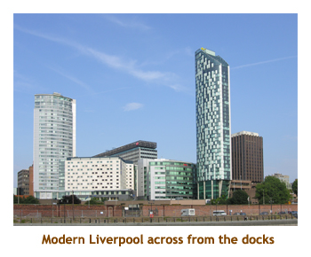

[ Home ] [ Travel ] [ Photography ] [ Pets ] [ Games] [ Rowing] [ Physics ]


Cruising on the Crown Princess
Travel
Cruises
Past Cruises (Diaries)
Future Cruises
Rogues Galleries
Land Trips
Diaries (Land Trips)
Hawai'i - Big Island - 04'01
Hawai'i - Maui - 05'02
Hawai'i - Big Island - 04'03
Hawai'i - Kaua'i - 09'04
Hawai'i - Big Island - 04'06
Hawai'i - Maui - 04'06
Mainland China - 05'07
Phoenix, Arizona - 12'07
Greek Isles - 05'08
Hawai'i - Kaua'i - 09'08
Hawai'i - Big Island - 09'09
Hawai'i - Maui - 05'12
Hawai'i - Big Island - 04'13
Ireland - 08'13
Mexico - Cancun 11'13
France/Belgium/Lux 07'15
Hawai'i - Big Island - 05'17
England / Wales - 06'17
Hawai'i - Big Island - 09'19
Photography
Cameras
Underwater
Pets
Tara
Blackie
Whitey
Muffy
Ollie
Rusty
Fluffy
Rufus&Dufus
Games
Rowing
Physics
Rating (out of 5): Ship  Food
Food  Service
Itinerary
Service
Itinerary
We booked this trip on the Crown Princess about a year before the sail date. The prices were expensive so we booked an oceanview cabin. Then Princess announced special pricing for TA's that was about 1/2 what we were paying. So, we upgraded to a balcony and still saved money! We were attracted to this itinerary as all the ports were new to us and it fitted nicely with the following Norwegian Fjords cruise (documented under separate cover).
The Crown Princess is identical to the Emerald princess, which we had sailed on last year. We had also spent a week on the Crown this past fall during which Christina and Matt were married. So we were familiar with this class of ship. Once again we found that the theatre capacity was hopelessly inadequate for a ship of this size (our only complaint). Realizing this, Princess has extended the major shows to three performances each - two one night and one the next. Now there are seats for everyone, but only half as much entertainment . For this reason, I have given the ship 4 stars. In all other aspects it is really a wonderful ship.
We have gotten into the habit of checking the total population count for the ship as we card on or
off the ship. The computer screens show the number of people aboard, ashore and total. This was a
full cruise with 3159 passengers (out of 3,100 double occupancy
capacity).
Pre-cruise (Jun 23,24) - Travelling to Southampton
So, we were all packed and ready to go. Our flight was an evening flight, so Marj went into work for the day. Chrissy picked me up about 4 PM and we headed off to pick up Marj from the Max Bell train stop. We got there about 4:20 to find that the parking lot had moved. Ach! Where was Marj? We found the new lot nearby and got there just as Marj came from the train. Chrissy dropped us off at the terminal by 4:45 or so. We had lots of time as our flight was at 7:20. We had no problem checking in, not much of a lineup. I grabbed a muffin from Tim's and we sat in the waiting room. The incoming flight from Frankfurt was a bit late, so we took off maybe 20 minutes late for our 9 hour flight.
We arrived at Heathrow and had to circle the landing area a few times due to heavy air traffic. We had made up
some time in the air and landed the next day at 11:20 AM, local time. We did the customs thing and
then picked up our bags and headed to the
bus depot. The Southampton bus is direct from LHR, there was no need to connect through Victoria Station.
We got a
ticket for the 12:50 bus. It was a 90 minute drive to Southampton, with just one stop at Winchester. We arrived
at Southampton about 2:30 PM. It was several blocks to our hotel, so we grabbed a cab. When we got to the
Jury's Inn, they had some bad news for us - overbooked! Even though we had booked months in advance,
we were the lucky ones chosen for relocation. So, back into a cab and off to the Highfield House Hotel. It's a nice
hotel with breakfast, and we were given the same 59 GBP rate as the other hotel. The only problem was
that it was located too far to walk to the downtown or waterfront.
We spent the afternoon wandering around the streets of Southampton. Restaurants and pub meals didn't
start until 6 PM, so we popped into a Waitrose
grocery store and bought some sandwiches, choco milk, etc to eat in our room. When we
got back to the hotel, there was an Audi R8 parked in front. The engine is in the rear with a glass
hatchback that shows off the engine. Marj took some photos of the car.
We booked a taxi for the next day to take us to the ship. We were really zonked with not sleeping for two
days plus the time zone change. Early to bed!
Day 1 (Jun 25) - Boarding in Southampton
I had an OK sleep at the hotel, although Marj didn't sleep much. The hotel had a great breakfast buffet - eggs, bacon, sausages, bread, toast, cereals, fruit salad, etc. Our taxi was coming at 10:30, so we went for a walk in the local area. The cab arrived on time and we travelled to the cruise dock (about 20 minutes away). We were very early, but it was amazing how many passengers were already there.We passed our main luggage to the curbside porters and prayed the bags would eventually make it to our cabin. Check-in went quite fast (the Elite desk was wide open) and then we had to sit in the waiting room until the ship was opened. About 11:40 it opened and we went directly to our cabin. We dropped off our carry-on and did a quick tour of the ship. I had lunch at the International cafe (great sandwiches and salads) and then headed up to the buffet to feed Marjorie.
After lunch we went back to the cabin and Marj had a long nap. I contacted room service about our
bar setup and ended up with 20 cans of Coke. Nice perk! I unpacked my suitcase (arrived early
afternoon) and watched Wimbledon. Lifeboat drill was at 5 PM. Marj's bag arrived just before dinner. We had
dinner with some folks from Arkansas and North Carolina. Marj had a great looking prime rib, and
I had Hawaiian luau pork. Yum! After dinner we did the promenade deck and watched us sail out of
the harbour and by the Isle of Wight. We were heading to Guernsey off the coast of France. We were
both really tired from the time change. It was after 9 pm, so we headed for bed.
What a couple of old fogies!
Day 2 (Jun 26) - St. Peter Port, Guernsey
We arrived at St. Peter Port, Guernsey about 7 AM. Guernsey is one of the Channel Islands just off the coast of France. It's heritage is both French and British, but the islands today are loosely affiliated with Great Britain.
We had an early breakfast and then headed off to join our
tour group at 8:15. We had to tender to shore (no cruise dock). It was cool and foggy but the sun
was supposed to break through later. As we climbed up from the tender dock to the main part
of the dock, I noticed that the stairs continued down well below the top of the water. The water was
exceptionally clear and I could see a landing about 20 feet below the surface. We later heard
that the tides here could vary by up to 40 feet. Sure enough, when we returned later at low tide,
the submerged stairs were high and dry!
We hopped on the bus and were driven right around the
island. The island was occupied by the Germans from 1940 to 1945 and there was
a sea wall with periodic bunkers all
around the shoreline. There were also stone towers, walls and fortifications from earlier
centuries.
Our first stop was by a golf course bordering the seaside. There was a gift shop/restaurant but we were still early and it wasn't open yet. Our next stop was at the Guernsey Pearl tea house where we had the opportunity to stretch our legs. Across the road was a small island fortification called the "teacup". About this time the clouds disbursed and the sun came out. Then we turned inland towards the airport and stopped at the Bruce Russell & Son Gold & Silversmith shop and gardens. The show room had many silver items on display, and a photo of a large bowl that was made for Charles and Diana's wedding. The garden was beautiful - 5 acres of flowers, fountains and lawns. Then it was off to "the smallest chapple in the world". This was built by Brother Deodat of the de la Salle Brothers, in a setting reminiscent of the grotto at Lourdes. Made of simple materials, it was beautifully decorated with pebbles, shells and myriad pieces of coloured broken china. Within walking distance was Martyn Guille & Guernsey Clockmakers which had some wonderful clocks on display. Then we continued around the coast until we returned to St. Peter Port.
We ended the tour back at the tender dock, about 12:30. We wandered around
the town and Marj found a Marks and Spencers. Then it was back to the ship for a late lunch.
I watched some Wimbledon tennis then we went to the Cruise Critic get together.
There must have been 50 or more people
there. We met our new friends from Ontario (we had had lunch together at the White Spot in Calgary earlier)
and some people from Edmonton and Red Deer. Had a great
dinner tonight - BBQ shrimp. Sat with some Cruise Critic friends from Albany NY. after dinner we went
to see a comedian in the Explorer's Lounge.
Day 3 (Jun 27) - Cobh (Cork), Ireland

We landed at the village port of Cobh (pronounced Cove). This is a small
port that services the much larger city of Cork (Corcaugh). As an aside,
during the English occupation of Ireland, placenames were Anglicized in
an attempt to obliterate Gaelic. Arbitrary names were given that somewhat
sounded like the Gaelic names, but had no connection to the actual meaning
of the name. It was about 6 AM when we sailed up the inlet to the
dock at Cobh. It was cloudy and cool, but supposed to clear up later in
the day. We had bypassed tours to the City of Cork, and the Blarney Castle
in favour of the tour down the coast to Kinsale village. This was a small
fishing village with 18th century architecture. After a wonderful cereal
/ fruit breakfast, we hopped on the tour bus at 9:45 (didn't have to rush).
The people in the seats ahead of us were from Edmonton - small world.
The drive along the coast was really interesting. Lots of green, cows
and farm houses. It took about 1/2 hour to reach Kinsale. There, we were
let off for 1.5 hours to browse though the village. The sun came out and
it was very nice. The rows of two or three story buildings housed all
sorts of interesting pubs, restaurants, boutiques, etc. It was especially busy
in the town as a big yacht racing weekend was in progress. We did a bit of
shopping in the souvenir shops.
We returned home by a different route, so saw some more countryside. The guide was very knowledgeable. Some of the things we learned - Sir Isaac Brock came from Cork (we lived in Brockville!), the Titanic's last port stop was Cobh, the Lucitania was sunk near Kinsale, Michael Jackson almost bought a house in Kinsale. The countryside was really beautiful. It was a very nice tour.
We were back to the ship by 1:30, so we popped aboard for a buffet lunch. After lunch we headed back
ashore (we were docked, no tenders!) and wandered around the village of Cobh. We hiked up the
hill to a huge Catholic Cathedral (St. Colman's Cathedral). It was very ornate inside. We had an
enjoyable walk around the
town. we headed back aboard just after 3 PM. Marjorie went to an Irish dancing show while I headed off to
the gym for a workout. We set sail for Dublin at 5 PM. Then it was time to get ready for formal
night dinner. We met some more nice people at dinner and had an excellent meal (fillet medalions).
The entertainment for the evening was a repeat of last night's, so we did a walk around the upper
deck and then back to our room to read (and type today's notes).
Day 4 (Jun 28) - Dublin, Ireland
We arrived at Dublin very early - about 4 AM. We were going to do the HO HO bus (Hop On - Hop Off) which started at 9:15, so we had lots of time. We had our usual breakfast and then exited the ship. It was a ways from the ship to the HO HO bus route, so we did the Princess shuttle into town. It dropped us off about 1 block from the HO HO bus. The bus service consisted of open double decker buses with 23 stops around the city, complete with a live guide pointing out all the sights. It was going to be a great day as the sun was starting to come out with blue sky and a few puffy white clouds.
We decided to do the complete tour loop first (about 1.5 hours) to get a feeling for where we wanted to
stop and also to get an overview of the city. On the second loop, we stopped at Trinity College. It
is the oldest / largest college in Ireland. The campus is fairly compact, with lots of interesting
buildings. We had wanted to do the library that housed the Book of Kells, but there was a very long
lineup and we had lots still to do. After tramping around the campus, we returned to the
bus. Our next stop was at the Dublin Castle. Being a Sunday, the castle didn't open until 1 PM
(we were much earlier), so we had to be content to see it from the outside.
As we wandered around the castle grounds, we chanced
upon a tour group with a guide with a loud voice. We followed the group around and learned all
about the castle. We had also wanted to visit the Chester Beatty Library (across from the castle), but it
didn't open until 2 PM. One of the trials of touring a port on a Sunday!
It was quite warm by this time and both Marj and I were glad that we had
worn our shorts.
We got back on the bus and headed off to St. Patrick's Cathedral - Ireland's largest church, built in 1192 AD. Again, being Sunday, we hit the church while a service was in progress. We got there about 12:15 and the service was going on until 12:30. It was no problem though as we walked through the neighbouring park and gardens. The church was huge inside and very ornate. It is an Anglican church.
We boarded the bus again and were off to the Guinness Storehouse. The storehouse is a old brewery that had been converted into an 8 story beer museum. It was very interesting, Every floor had a large display area. The entrance fee included ticket for a free pint of Guinness - freshly brewed! (Marj didn't use her's, but I found 1 pint to be sufficient).The top floor (called "The Gravity Bar") yielded a great 360 degree view of the city. The gift ship had loads of different Guiness products. We had to go through the museum quickly as the last shuttle back to the bus was at 4 PM and we still had 1 hour of the HO HO loop to travel to get back to the shuttle stop. The loop included a drive through Phoenix Park - Europe's largest enclosed city park. It includes playgrounds, gardens, memorials, a zoo, the Irish president's official residence and the US embassy.
We made it safe and sound back to the shuttle stop and caught the 3:30 shuttle to the ship. We
were back in time for a gym workout before dinner. Dinner was great and then we saw a juggler /
unicyclist who was pretty good.
Day 5 (Jun 29) - Liverpool, England
We sailed across the Irish Sea from Dublin overnight, docking around 6 AM
at Liverpool, home of the Beatles. It was to be a sunny warm day again (what luck with our
weather!). Rather than doing Liverpool itself, we had booked an all day tour to
Chester and into Wales. We had an early breakfast and
headed off to our 8:30 tour. On the bus we did a bit of a drive through Liverpool and then,
heading south, we
entered the Queensway tunnel to travel under the River Mersey to Birkenhead on the Wirral. It was
quite a long tunnel (about 2 miles).
We continued down the Wirral to Queensferry and into the Welsh
countryside. The scenery was wonderful - rolling hills, green fields, cows, sheep ... It was very
picturesque. We crossed a mountain range called the Clwydian Range. We had some
picture stops along the way. At one point in the
mountains we did a stretch stop at the Ponderosa Cafe. It would fit right in with the Canadian Rockies,
but was the most un_Welsh building I could think of! Then we passed through the villages of
Ruthin and Corwen.

Our main destination was the village of Llangollen (pronounced "Clang-gock-lin" with some spitting noises). It was a beatuiful little village. We wandered around, took some photos and did some shopping. At a small bakery I bought a couple of Welsh cakes. They were great - just like Mom used to make! Also purchased some Welsh drink coasters for one of the girls. Then it was back on the bus heading north again towards Liverpool, but by a different route. We stopped for lunch about 1 PM at the city of Chester. Lunch had been arranged for us in a local hotel. It was very good. Then we did a tour through the Chester Cathedral. What an amazing building. After that we were given an hour or so to wander around the old part of Chester. Lots of boutiques, restaurants, souvenir shops, etc. The architecture was mainly tudor. Very nice! We got back to the ship about 5 PM. We spent a bit of time wandering around near the docks, lookng at the mordern and not so modern buildings of Liverpool. Especially interesting was a very modernistic foot bridge leading across to the town.
Then it was time to get ready for dinner. Seeming as we had left Ireland and were back in
England, I had Irish stew with lamb. Very good.
We skipped the entertainment (it was a repeat) and went to bed early.
Day 6 (Jun 30) - Belfast, N. Ireland
Once again crossing the Irish Sea, we pulled into Belfast harbour about 7 AM. We had breakfast and then headed off the ship at 8:30. Our friend, Bill Burns, was there to meet us. Marjorie had met Bill in 1988 at Lynn-Tincap School in Ontario. Bill was over from Belfast on a teacher exchange assignment. For whatever reason, I had never met Bill. Since then we exchanged Xmas cards each year. I wrote to him about our pending cruise, and when he heard we were coming to Belfast, he insisted on taking us for the day. It was a gorgeous day with temperatures hitting 28 degrees - a real heat wave for Belfast!
Bill met us at the ship at about 8:30 in his sporty red Peugot and gave us a hearty
Belfast welcome. He began
by driving us northeast up the coast through Carrickfergus to the village of Larne where he lives. He
showed us his house and a beautiful garden in the back yard. We had a cup of tea and then
continued up the coast to another picturesque village called Carnlough Harbour.
There we had a picnic at a grassy park. He
had made sandwiches, chicken legs, red wine and fresh strawberries with cream. Wonderful!
Then we headed inland towards Ballymena, passing through a beautiful village (called Broughshane) that had won the "Britain in Bloom" competition several times in the "large village" category.There were gardens and hanging baskets everywhere. Finally we headed back into Belfast and spent the rest of the afternoon walking around downtown Belfast. We visited St. Ann's Cathedral and saw lots of historic buildings. After we had done the downtown area, Bill dropped us off back at the ship, well in time for our departure. It was a wonderful day and we certainly appreciated Bill's kindness and hospitality.
In the evening we had dinner with our Ontario friends Graham and Dawn. (We had met them through the Cruise Critic
website prior to the cruise. About a month before the cruise
they were coming out to Banff for a weekend conference, so we had lunch
with them at the White Spot after they arrived at the Calgary airport.) They had
their two teenage daughters with them on the cruise. For dinner I had leg of lamb with mint sauce. Yummy!
After dinner we listened to a comedian and then turned in for the night.
Day 7 (Jul 1) - Greenock (Glasgow), Scotland
We pulled into Greenock about 7 AM. It was a sunny morning. Greenock is a village on the mouth of the Clyde River. On the way in we were accompanied by a Trident submarine from a nearby naval base. Together with the neighbouring villages of Gourock and Port Glasgow it is part of the administrative area of Inverclyde. Greenock is about 27 miles from the city of Glasgow. We had decided not to do a tour into Glasgow but rather spend time in the countryside. We had booked a Loch Lomond tour for the afternoon. We were planning to just walk around Greenock in the morning but, while exploring the "souvenir" tent at the end of the gangway, discovered that the local Chamber of Commerce offered free bus tours around the villages. There were separate tours to Gourock, Greenock and Port Glasgow. So, we hopped on a large bus at 9:30 and did a 2 hour tour of the village of Greenock and it's surrounds. It was very interesting. The guides were all volunteers, but ours was excellent.
Our first stop was at Old West Kirk - Church of Scotland. It was built in 1591 and
later restored in 1864. In 1928 the site was expropriated (I forget for what) and the church
was moved stone by stone to its present location. Our next stop was at the top of a hill
overlooking the town and the Firth of Clyde. Something happened mechanically to the
bus and the driver had to call for another bus. About 20 minutes later we were going again
in the replacement bus. Our final stop was back in town at the City Hall. This was a beautiful
old stone building that had wonderful carved ceilings, statues, paintings, etc. It was
more like a museum than an administrative building.
We left the bus in the center of town rather than do the 5 minute ride back to the ship.
We did some shopping in a small mall and then walked back to the ship.
We had lunch (about 12:30) and then got ready for our 2 PM ship's tour. The weather was changing. By lunch it had clouded up and threatened to rain. The tour took us north to Loch Lomond (Ye tak the highroad and I'll tak the low road ...). We stopped at the picturesque village of Luss on the loch where we visited an old church and walked by cottages with beautiful gardens. At the waters edge, we walked out onto a wharf where we could see up and down the loch. There were lots of familes picnicing on the beaches. We did some shopping in the souvenir shops and then it was time to reboard the bus. We circled through the mountains. We did a photo stop in a mountain pass (Argyll Forest Park) and it rained a bit. We headed south again towards Greenock along Loch Long. We ended up across the firth from Greenock in the town of Dunoon and had to take a small ferry car. We got back to the ship about 6 PM (final boarding was at 6:30).
We changed and headed down to dinner. We sat with a young couple
that turned out to be
brother and sister (traveling with their grandparents). The boy was about to graduate
with a history degree, and the girl was starting into a horse veterinarian school.
The ship had a Canada Day celebration with a huge "Happy Canada Day"
cake and lots of decorations throughout the ship. The entertainment was a repeat from the
previous night so we did the promenade walk and then packed it in for the day.
Day 8 (Jul 2) - Day at Sea

Today was our first day at sea. We still got up fairly early and the breakfast area was quite deserted. The morning started off quite sunny and warm. We walked the decks and then I headed to the gym for a workout. It was really busy there. After the workout I watched some more of my new Corner Gas DVD (thanks C&M). Forgoing the buffet, we finally did a lunch in the formal dining room. It was very nice. Over lunch the weather clouded over and cooled down. I spent the afternoon watching the Wimbledon tennis matches. The William's sisters both won, but in completely different manners. The Serena match was a real nail biter. We did some more deck walking and it was windy, cool and raining. Better today than on our port stop tomorrow! The Captains Club party was this afternoon, but we decided not to go. We've met enought captains!
The entertainment was a stage hypnotist. Marj and I had never been to see a hypnotist
before so we were very curious. The show was hilarious. About 10 people were hypnotised
and did all sorts of silly things. Great to watch, but I wouldn't want to have been one of the
volunteers.
Day 9 (Jul 3) - Invergordon, Scotland
We pulled into Invergordon about 7 AM - sunny and blue sky. This was our first private tour of the cruise, with 6 other people. We had an early breakfast and got ready for the trip. There was a bit of a mixup meeting for the tour. The organizer had originally sent an email to meet off the ship at the taxi area as soon as the ship was cleared for disembarking. However, he then changed his mind and left phone messages aboard that we would meet at the International cafe (deck 5) by 7:45. Of course some of the folks went to the taxi area! We eventually all connected and got away just after 8 AM. The van was a 9 seater (including the driver/guide and there were 8 of us passengers, so we didn't have room to spare. We did a brief tour through the village of Invergordon and then headed through the countryside to Loch Ness and the famous Urquhart Castle. We got to the castle fairly early before the bus crowds. It was very interesting. We clamboured around the ruins for an hour or so. It was much larger than I had expected, essentially a small walled town. The sun was still shining, so it was great for photos. We looked quickly in the gift shop, but by then many buses had arrived. The gift shop was also the ticket office, so it was packed with people. The only disappointment was that we didn't see Nessie. On the plus side, I didn't drop my camera into the loch after getting a grainy photo of the monster.
Then we drove back along the loch to the town of Inverness. We stopped at a lovely river park just on the outskirts of Inverness. We walked along the river enjoying the sunshine.From there we headed south down the coast. Along the way we passed the fields of Culloden where one of the huge wars between England and Scotland was fought. The original battle lines were marked by coloured flags. we continued on to Cawdor Castle. The castle was quite large and most of it was available for touring. First though, it was about 1:30 so we visited a small restaurant on the grounds and had lunch. It wasn't really a Scottish lunch as I had a sandwich and some penne and cheese (like mac'n'cheese). After lunch we toured the castle and wandered around the grounds and gardens. Whereas Urquhart Castle was in ruins, Cawdor Castle was still lived in and in very good shape. The gardens were quite extensive and included a hedge maze (which was unfortunately out of bounds). Then we drove back towards Inverness to the Glen Ord distillary. This is where they make Scotch Whiskey. By this time we were quite tired. Marj and I had no interest in Scotch whiskey and another couple and their young chidren were not interested either. So, we turned down the distillery tour (that we would have had to pay for). Only the couple who organized the tour were whiskey fans, but they too turned down the tour. We browsed the distillery gift shop for a bit and then continued on our journey. Finally we drove back to the ship. One small village we went through (Alness) was a frequent winner of the "Britain in Bloom" award (in the small town category). There were lots of great gardens and hanging baskets.
We arrived at the ship about 5 PM. I watched a bit of the tennis
and then went for dinner. The entertainment was a repeat of the hypnotist so we once
again skipped the show for the night.
Day 10 (Jul 4) - S. Queensferry (Edinburgh), Scotland
We sailed into South Queensferry about 6 AM. This was a tender port, so we anchored out in the bay. The bridge that spans the Firth of Forth did not allow passage to a ship the size of the Crown, so we were unable to make use of the town's docking facilities (on the other side of the bridge). We had an early excursion (7:30) to Edinburgh, so had to grab an early breakfast and hustle to the tenders. The tender ride took us across the firth and under the bridge. From the tender dock we walked to our bus. We were in the village of South Queensferry, a quaint little town. Lots of two story stone buildings. We drove through the countryside and into Edinburgh. There was a standard tour route through downtown Edinburgh but it was somewhat blocked by a huge military parade that was starting at 10:30. The parade was in recognition of troops returning from Iraq. Not the best day to tour Edinburgh! However, we drove up and down many streets seeing most of the town. It is an amazing city with all sorts of historic buildings and monuments.
After about 1/2 hour of touring the city we drove up to Edinburgh Castle. The entrance area (huge) was encircled by portable bleachers in preparation for the Edinburgh Tatoo which runs through the month of August. We entered into the castle grounds and were given a brief tour by the guide. Then we were given about an hour to wander around on our own. The castle was very interesting. It is essentially a military installation, not being home to any kings, queens or other notables since about 1500 AD. After our wander, we headed out of the castle and saw some military bands assembling for the parade. Unfortunately we couldn't stop to watch as we had to get back to the bus. We had a second tour through an area of Edinburgh and then drove back to South Queensferry soon after noon.
It was such a charming little village that we decided to explore a bit.
We spent about an hour walking around the village and picked up some peanuts and
drinks at the Scotmid grocery store. Then we hopped on the tender and motored back
to the ship. We got back about 1:30 so had another late lunch. For the remainder of the
afternoon I watched the Williams sisters at Wimbledon final and then
did my usual gym workout (followed by Corner Gas). Dinner was great as usual.
There was nothing of interest to us at the entertainment, so we did our own thing instead.
Day 11 (Jul 5) - Day at Sea
Today was our second (and final) day at sea (for the first leg of the trip). It was cloudy and rainy in the morning. I did my gym workout, Corner Gas and some reading, so that was fine, while Marjorie attended a seminar of some sort.. On sea days, a special "English Pub" lunch was being served in the Wheelhouse Bar. We decided to give it a try. They had a choice of fish & chips, bangers & mash, ploughman's lunch and shepherd's pie. We ordered the F&S and it was delicious. The fish was excellent and the wedge cut fries were great. Have to try this again on the next leg of the trip.
The afternoon cleared up and it was warm and sunny. I sat in the sun for a bit and then
watched the Federer / Roddick final at Wimbledon. The match was excellent. In the middle
of the 5th set, we had some excitement as the captain announced a
medical emergency and that a helicopter was coming from England to take the person to a
hospital in Ipswich. A yellow RAF helicopter soon appeared. There is no helipad on this ship
so they had to use the basket on a wire. They got the patient and his wife onto the chopper and then
returned to England. Back to the tennis, it was 6-6 in the 5th when our dinner time arrived. Rats!
But is was OK because we were having a final dinner with Dawn
and Graham (Ontario friends) and their daughters
as they were getting off the ship in Le Havre to do a few days
in Paris. I didn't realize you could check off the ship early. It was dressup night again, so I
donned my suit and tie. Dinner was great as usual - lobster tails and giant shrimp. Yum!
The entertainment was an illusionist with the large stage props. He was OK, but we had
seen most of the illusions / tricks before. After the show I checked on ESPN to see that
Federer had won at 16-14 in the final set. All right!
Day 12 (Jul 6) - Le Havre (Paris), France
Today was our final port call on the first leg of the cruise. We pulled into Le Havre (France) about 5 AM. We had an early excursion because we were going to be 10 hours in Paris. It was over 2.5 hours on the bus each way, so actually we only had 4.5 hours right in Paris. The weather was grey and overcast. The trip there and back was interesting, passing towns, corn fields, cows, sheep and industrial areas.
Once we entered Paris the sun came out and we made our first stop at the Palais de Chaillot. This was built for the 1937 exhibition and houses several museums and theatres. From the large square we could see across the Seine River to the Eiffel Tower. In the foreground was the Trocadero Fountains. We had a bit of time to wander around the plaza. Lots of people and souvenir stands. Then we drove to Des Champs Elysees and the Arc de Triumph. The Arc was built by Napoleon in 1805. We continued on driving up and down city streets lined with beautiful stone buildings, parks and gardens. It was amazing.
We finally stopped and walked to a restaurant called Chez Jenny. On the sidewalk we passed two horses that were standing there. Strange! The restaurant was quite large and seemed very nice. However, as is the European custom, the salads were already placed at each setting before we sat down. I was the first to our table and a large cockroach scurried across the table. Then Marjorie found a wormy thing in her salad. Whew! Not up to North American standards! The lunch was goods though - red wine, chicken, apple pie. After lunch we headed back to the bus for more touring.
Once again we travelled up and down streets seeing far more than I can remember. Our final stop was at the Notre Dame Cathedral. We were let out for an hour of wandering. We went into the Cathedral and were amazed by its size, and the wonderful stained glass windows. There was quite a crowd of people inside, but I guess its always busy there. After leaving the church, we walked down the street a bit past some souvenir shops. We bought some drink coasters that had pictures of Paris sights. Big spenders! Then it was back on the bus for a final look at Paris and then back on the highway to Le Havre. On both ways of our highway trip the bus stopped at a gas station / convenience store for people to stretch their legs.
It was a long day, but I really enjoyed it. We had partly cloudy skies, but quite warm. Had a bit of rain on the drive back to the ship, but we had lots of sunshine while in Paris. We got back to the ship about 7 PM. Ten or twelve buses all arrived at the same time from their respective tours and there was a huge queue waiting to board the ship. We must have taken 20 minutes or so to go through security and get back on board. We had a late dinner and missed our time slot for the entertainment. Oh well, we had done enough for one day.
Tonight was the last night for most of the folks. Suitcases were out in the hallways, and people
were sad to be leaving. We had our new passkeys delivered tonight (for the next leg) and were
looking forward to the trip to Norway.
Day 13 (Nov 7) - Southampton
For the entire cruise, we had been spoiled by glass smooth seas. You really could not tell the ship was moving unless you looked out a window. However, overnight crossing the channel from Le Havre we had heavy seas and the ship rocked and rolled a bit. Great for all those first time cruisers to get a taste of the real sailing experience!
The ship was really busy in the early morning, as passengers gulped down their last breakfast and headed off the ship with their carry-on luggage. It felt so good not being in the same situation and we had a leisurely breakfast and then grabbed our backpacks for a wander through Southampton. I had wanted to grab the train to Salisbury and Stonehenge, but Marjorie was worried that we'd miss boarding for the next cruise. So, Southampton is was.
We scooted out past suitcase carrying passengers who were sad to be leaving. We carded out for the last time using our BI cruise cards, and had brought our new NF cards that we would re-enter the ship with later today. It was a mostly cloudy, bit of sunshine day - cool but quite humid. We walked about a mile to get out of the docking area and into the downtown section of the city. It rained on and off. We visited the West Quay Mall where Marj got another Marks & Spencers fix. Then we hiked over to the local tourist info place. The guy there mentioned about a free city bus that we could take to the waterfront. So, we took the bus to the "City Quay" where the ferry terminals are. It was quite interesting. The sun even came out for a bit. We could see the Isle of Wight quite close to Southampton (less than 1 mile away). And, futher down the harbour was the Cunnard Queen Victoria. We bused back to the shopping area and it started to pour with rain. We wandered through the Matalan shopping mall and then bused it to the train station (end of the line for the bus). It was around lunch time as we headed back to the ship. It was dry again by then and our mile walk back to the dock was quite pleasant.So, here endith the story of our first leg of the journey. Please see the Norway cruise diary to continue with the trip.